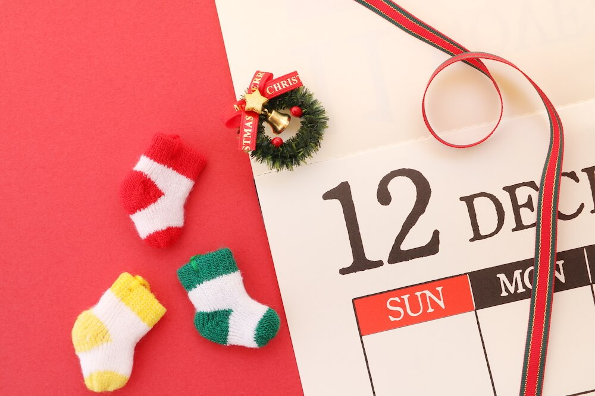

2019 年第四季度总结
这里记录下第四季度自己的一些想法，为了日后翻阅方便！
- 十二月
- 自律和自由
- 生命如此重要
- 法兹&惘闻
- 乐队的夏天
十二月
我们不要一味的追求完美主义，它会带给我们压力，也不利于身心健康。
完美主义在心理学中指一种不断追求快而准或基本准确的主义，追求完美的性格或主义，其往往伴随着自我否定和对他人评价的关注。完美主义有多维度的性格，它有着积极的一面，也有消极的一面。病态的完美主义会使人追求过高且无法实现的目标，并会在他们失败时带来极大的痛苦。而正常的完美主义能带给人们追求目标的动力，同时给他们带来乐趣。

一 自律和自由
有些事情需要思考，有些事情需要记住，有些事情需要进步！
最近感受尤为强烈的就是，晚上熬夜这个问题。因为我自己做事情老是爱拖沓的原因，导致很多事情都没有及时按照规定的时间完成，而到了实在需要干的时候往往结束就会到了比较晚的时候。而且，自己对应一个事情的预计时间不够，导致本来应该两个小时完成的事情，我只给了一个小时的预计。等干完这件事情的时候，抬手一看，都快 12 点多了。这样，尽快去洗漱完毕之后就到了快一点了。
主要是这样很影响自己的睡眠时间，一旦睡眠时间无法保证的话，第二天上班的效率就会多多少少受到影响。真的是，损人不利己的行为。而且因为我办事效率的问题，圆圆也是多次提醒过我，但是就是好了伤疤忘了疼，没过多次时间就又开始了。自己也想了多种方式来决定这个问题，比如说如果什么事情导致自己晚睡的话，就给银行卡里存钱。但是效果，不是很好。
其实，总的来说，还是解决的方式不对。对我来说，可能存钱并没有让我感到多少的不适，并不能让我感受十分困难，难以接受。而人的惰性是每个人都会有的，但是有的人做的比较好，而有些人却选择放任自流。但是，我却介乎于两者之前的那种人，最为尴尬，最为致命，常常让我感觉到有一种罪恶感。
我现在的做法就是：在前天晚上睡觉之前就尽量安排好今天自己需要干的事情，一旦完成了就从中去除，在晚上睡觉之前再次检查一遍，看看还有哪些事情没有完成或者因为什么原因耽误了，总结下。这样让自己之后的规划更加的合理和有条理，剩下就是自己按照这个流程来就行了。
二 生命如此重要
有些事情需要思考，有些事情需要记住，有些事情需要进步！
生命是这个世界上最为重要的东西，那么如何让有限的生命发挥出无限的活力呢？我之前也写过一篇文章，来说我为什么要坚持写博客的原因。事实就是这样子的，我们来到这个世界上，总想给这个世界留下点什么，来证明自己还活着或者曾经来过这个世界。在我们快要死的时候，还能给这个世界留下点什么，说不敢也好，说害怕死也罢，没总比什么都没有强把！
这个月月初，大妈生病了，没什么征兆，突发性的，直接就被 120 给拉到了重症监护室了。我也是周四下午才知道的，等了一天，到周六我和圆圆去医院看望大妈，看看现在到底怎么样了，虽然听老爸和老妈说不太乐观。我们去了，但是根本没有办法探视。只有三点到三点半之间不到十分钟的时间，可以进去看看状况和护士了解了解情况。所以这么好贵的时间肯定是不能留给我的，肯定只能让我姐进去看，让她们知道大妈具体是什么状态，是否需要协助等问题。
第一次去的时候，二姐和二姐夫都在门口留守，防止有问题的时候，医生和护士可以及时找到家人进行沟通和协商等。里面进不去，所以我们就在外面的靠椅上聊了聊，主要讲述了事情发展的经过，现在的状况，还有之后的打算等。总的来说，现在的状况还是比较乐观的，可能过不了多久就可能转到普通病房了。如果接下来恢复的好，人就可以正常吃饭上厕所了。然后，又聊了其他一些事情，巴拉巴拉的。一晃，时间不早了，我和圆圆就准备回家了。在坐车回家的路上，我就不断的思考，如果这个事情砸到我的头上，我也一时半会接受不了，感觉天塌了一半。
就好像前几天看到的视频里面描述的一样，一位开着面包车的武汉志愿者，给需要药物抑制新冠病毒病人或家属送药。我们知道其实是冒着很高的风险的，很有可能接触到新冠的感染者，而捐药的松鼠哥还是一个 HIV 的患者。给其中一个家属送药的时候，女孩出来的时候，直接就哇的一声嚎啕大哭，说我的爸爸没了。原来前两个才给父亲在医院找到了床位，刚住进去没两天，人就没了。医生说，病情发展的太快了，控制不住。然而，她的妈妈在家里也是轻症。这样的情况，试问谁可以轻松应对呢？
没过多久，我和父母又去医院看大妈了，虽然说还没有转到普通病房，但是说是情况有好转了。这样总不至于，让人那么担心了。
可是没过几天，说是病情恶化了，需要做手术。所以那天一大早，我就和父母一起去了医院。刚到医院的时候看到，大伯，真的我的眼泪都要下来了。不知道为什么，虽然大伯还是让人感觉比较轻松淡定的。但是我一旦看到了他的眼睛，我总感觉是泛着泪光的，我的眼泪在眼眶里面一直打转一直打转，最后实在没忍住，我感觉走到了楼梯口让眼泪往下落。调整好情绪，我又过去了，看看灰灰看着窗外的背影，总让人感觉到心痛。想上去和他说点什么，但是说什么都感觉是多余的。
我承认自己不是一个坚强的人，看不得别人哭，尤其是自己的家人和朋友。别人哭的时候，我最受不了，明显感到一种非常的痛苦一种无奈。将亲人交给医院，而自己却没有什么办法。我们也不懂应该怎么治疗，所以只能依靠医院，把所有的希望和寄托都交给了医院。具体能否治好，我们不得而知。没人知道，也没人告诉我们应该怎么办，有的只是等待，等待签字，也就只有这样了。
在手术室外面等待，十个人都在焦急的等待。没人坐在外面的等候室，都在传话的楼梯口坐着，生怕来不及。这个长长的楼梯口，我当时感觉特别的长、特别的长，看着前面坐着的灰灰和他老婆，真的是五味杂陈。灰灰总是将头埋到自己的胸前，我能够感觉到那是多么的无奈和悲伤。
幸好，几个小时的等待，结果是好的，手术很成功！大家捏着的心，总是可以放下了。一切都会慢慢变好，珍惜眼前的人，不要等到失去的时候，才懂得珍惜。
三 法兹&惘闻
有些事情需要思考，有些事情需要记住，有些事情需要进步！
周四下午的时候，浩浩突然给我发微信过来，问我下午有没有时间一起去看演出。因为是工作日，而且演出晚上八点半就开始了，我可能下班回趟家过去就跟不上了，所以还是有嘀咕的。但是还是架不住，想去看演出，所以给圆圆说了下，让他自己一个人下班之后先回家去，不用等我了。
时间又开始忙碌的过着，不一会儿就到了下班的时间了，刚刚好今天也没什么重要的事情，所以可以稍微早点走。没带电脑，就直接去了地铁口，结果就是这么奇怪，做错方向了，尴尬了。因为我这里具体演出的大华具体还是比较长的，即使打车过去都没有坐地铁快。
说来也巧，快到的时候，浩浩问我到哪里了，我说快到了，说他们在铁蛋鸡汤刀削面哪里问我吃干的还是汤的。我刚刚到，面也好了。一起吃了饭，看了看时间刚刚好。他和他师兄一起过来看演出了，结果他师兄也买了票，所以就多了一张票就让我捡了一个漏。很久都没有来大华看演出了，走在路上，还是有点不太自然的。
到了地方，检了票进去，发现光圈也搬到大华了。确实让我感觉有些意外，看来确实好久没有过来了，变化还是有的。进去之后，人还是挺多的，我们三个站在了舞池的靠后面的地方。闲聊了几句，演出就开始了。
这场演出是一个双拼，前半场是西安本地的法兹乐队，后半场是来自大连的惘闻乐队。因为之前这两个乐队的歌曲，我都是没有听过的，所以演出的时候共鸣或者一起合成的情况，应该不会有。法兹乐队演出的歌曲大多属于比较安静，不太燥的，所以前几首歌曲过去的时候，台下的歌迷并没有太大的反馈，最多也就是呦呦呦几下，就安静的开始听歌了。让人记忆犹新的就是，主场在台上不断地”打拳”，哈哈哈，逗死了。真的就是，疯狂的打拳，果然打的一手好拳。安静至于，他邀请一个小女孩上台，开始唱《控制》的时候。蹬蹬蹬，音乐开始响起的时候，紧急就是小女孩纯真的声音，我的新开始舞蹈了，真的非常好听。台下的人都开始 POG 了，浩浩说我们进去吧。随着一阵贝斯的 SOLO，我们一下涌入到的跳跃的人群中去了。但是我退了下来，我感觉自己蹦跶不动了，主要是我手里还拿着脱下来的羽绒服。如果开始去里面疯的话，可能不够尽兴。
最后一首歌结束，台下的人们也开始安静下来了。趁着这个中场休息的时候，很多人都出了演出厅去外面透透气，里面确实有些热而憋气。大概二十分钟左右的样子，随着一阵阵掌声，惘闻乐队的乐手开始不断登场，调试乐器和校对生效等。因为我自己从来都没有听过他们的歌曲，也就完全不明白他们是什么风格，但是一开始就是用音乐在不断地营造一种十分宏伟的气势，一直在营造，一直在营造。以为快要结束的时候，发现突然又上了另一个台阶，就是在这种一层一层的推进当中让我感觉头皮有点发麻，身体在不断被冲击到。
一首一首歌曲的过去，发现他们演奏的歌曲没有一句台词，我都点懵逼了。之前接触到的，从来没有出现过这种的演奏形式，但是大家好像都被吸引住了、沉浸在其中了，包括我在内。就好像我们使用哪种上下推来控制音量大小的调节器听音乐一样，慢慢的将音量从下来一直推到了最顶端，然后在这个高度不断地推进，让你的身体不断地再被冲击。这样还不够，又用一个砖头开始顶着这个音量推钮使劲往上怼，一直怼，一直怼，直到最后所幸将全部的力气都用上将这个推钮怼到十米开外，之后任由音乐在脑子里遨游。这种感觉真的是，之前重来没有感受到的，确实让我感觉此行不虚，值。
演出结束最后，我们三个走出大华门口的时候，都感觉到了有严重耳鸣的情况，耳朵里还是在里面听演出的感觉，嗡嗡嗡的。走在路上，我们聊了下这次演出，我给出的总结惘闻乐队的歌曲就是摇滚交响乐！感觉浩浩带我看演出，赞！
曲尽人散，各回各家。
四 乐队的夏天
有些事情需要思考，有些事情需要记住，有些事情需要进步！
正是因为上次看”法兹&惘闻”演出的时候，浩浩说《乐队的夏天》是 19 年最好看的乐队综艺节目，推荐一定要看下，很棒很牛逼。所以那天晚上在网上搜了下，大致的竞赛流程就是：开始选择十几只乐队，两两进行多轮次的 PK，最后选择大家最喜欢的 TOP5 进行全国巡演。
最让我感到惊喜的就是，刺猬乐队和新裤子乐队。虽然这两只乐队都是成立很久的乐队，但是我之前基本没有听过他们的歌曲，或者之前可能听过，但是可能不太喜欢并没有太多的印象了。这次观看了这个节目，他们的歌曲都是从头听到尾的，确实让我感觉到了不一样的感受。新裤子的彭磊每次 POG 的那一下，真的酷毙了。另外，让我没有想到的就是，刺猬乐队的林子健居然是一个程序员。还有，痛仰乐队还是一如既往的让人感觉舒畅。
我个人认为适当的参加综艺节目，还是非常有利于乐队的发展以及大众对于摇滚乐的普及。乐队可以通过在综艺节目的演出，来让更多的人了解自己的歌曲以及乐队文化，来圈粉。另一方面，有一定知名度之后，乐队的收入也就提高了，更有利于可持续发展。了解乐队的人都知道，阻止乐队的发展很大程度的原因就是因为玩这个玩意根本不挣钱，从而导致很多乐手不得已还需要出去再找一份工作来弥补玩乐队的开销。时间长了，谁又能这样坚持下去呢？你愿意这样吗？你的家人愿意吗？你不要老婆孩子了吗？
让我记忆犹新的是，新裤子乐队和 Cindy 一起演奏的《艾瑞巴迪》，尤其是 Cindy 演出中间的那段 Hook，真的很棒。当时听了之后，我真的被洗脑了好多次，而且不止一次给旁边的人开始推荐这首歌曲。虽然我并不喜欢，彭磊说 Cindy 她们的乐队是野生组合，因为每个人都是需要被尊重的。
突然有一天下班回家，旁边的同事问我，说这么乐队都是怎么分类的呢？我说有的是根据他们的服饰装饰或者歌曲曲风进行分类的，有的是根据歌词和用的乐器进行分类的，所以比较多也比较杂。之后过了一段时间，我又想到了这个问题，其实分类真的重要吗？乐队其实并不需要分类，只有你自己感受到了你自己需要的东西就行了。不管它是雷鬼也好，还是民谣也罢，只要能够打动你的都是好音乐。